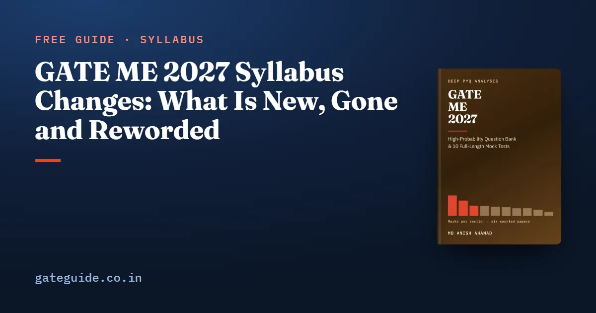

GATE ME 2027 Syllabus Changes: What Is New, Gone and Reworded

The GATE 2027 Mechanical Engineering syllabus differs from the 2026 one by 30 added phrases, 5 removed phrases and 19 reworded ones, compared phrase by phrase from the two official PDFs. Two paragraphs are new — Additive Manufacturing, and Computer Aided Manufacturing and Automation — and two are gone: Computer Integrated Manufacturing and Inventory Control.
In this guide
That is a real revision, not a tidy-up, and it follows three editions, 2024 to 2026, with no change of substance. The 2025 and 2026 documents are identical word for word and mark for mark. But a phrase that is newly named is not always a phrase with no history, and sorting the two is the whole point of this guide.
Key takeaways
- 30 phrases added, 5 removed, 19 reworded. The 2027 text runs to 249 phrases against 214 in each of 2024, 2025 and 2026.
- Two new paragraph labels and two retired ones. The other 21 labels are unchanged in name, and five paragraphs are unchanged word for word.
- Only two removals are real: "Lagrange’s equation" and "Heisler's charts". The other three phrases moved.
- Additive manufacturing and CAD/CAM are newly framed, not new. Both were already asked in five or six of the six papers from 2022 to 2026.
- The genuinely new ground — control systems and PID, boiling and condensation, combustion, actuators and PLCs, work study, six sigma, quality and reliability — has no counted question at all.
The headline numbers
| 2026 | 2027 | |
|---|---|---|
| Paragraph labels | 23 | 23 |
| Phrases | 214 | 249 |
| Words and punctuation marks | 1,004 | 1,168 |
| Phrases added in 2027 | — | 30 |
| Phrases removed in 2027 | 5 | — |
| Groups of phrases reworded | — | 19 |
Twenty-four further differences are only capitalisation, spelling or punctuation, such as "simplex" becoming "Simplex". They are not syllabus changes, and none belongs in a revision plan.
The change is uneven across the four sections:
| Section | Phrases only in 2026 | Phrases only in 2027 |
|---|---|---|
| 1. Engineering Mathematics | 2 | 2 |
| 2. Applied Mechanics and Design | 11 | 17 |
| 3. Fluid Mechanics and Thermal Sciences | 6 | 15 |
| 4. Materials, Manufacturing and Industrial Engineering | 18 | 38 |
Engineering Mathematics barely moved: "Cauchy’s integral theorem and integral formula" became "Cauchy’s integral theorem and contour integral formula", and "single and multi-step methods for differential equations" gained the word "ordinary". Section 4 carries most of the revision, and Production Planning and Control alone gained seven phrases, more than any other paragraph.
Newly named, already examined
Several additions put a name to material the papers had already been setting. The count of the six papers from 2022 to 2026 finds:
- Additive Manufacturing is a paragraph of its own for the first time, but "additive manufacturing" was already a phrase under Computer Integrated Manufacturing in 2026. It was asked in five of the six papers: 2022 S1 (Q28), 2022 S2 (Q21), 2023 (Q55), 2025 (Q40) and 2026 (Q31), seven marks in all.
- Computer Aided Manufacturing and Automation inherits two phrases word for word: "NC/CNC machines and CNC programming" from Machining and "Basic concepts of CAD/CAM and their integration tools" from Computer Integrated Manufacturing. That material drew a question in all six papers, eight marks in all.
- "flow through converging and converging-diverging nozzles" replaces "basics of compressible fluid flow". 2022 S1 (Q30) asked about a choked convergent nozzle and 2024 (Q40) about a normal shock in a converging-diverging nozzle.
- "concept of velocity potential" is a new phrase in Fluid Mechanics. 2022 S2 (Q29) and 2025 (Q50) both turn on it.
- "casting defects" is new, and 2026 (Q30) already asked a 1-mark question matching dross, scab and scar to their descriptions.
- Inventory control lost its paragraph, but "Inventory Control – deterministic models", "safety stock" and "inventory control systems" now sit in Production Planning and Control. Inventory control drew marks in all six papers.
For all of these, past papers remain good practice.
Genuinely new, with no counted question
These additions have no question of their own anywhere in the six counted papers:
| Paragraph | Added in 2027 |
|---|---|
| Vibrations | "Control system", "PID controller", "transfer function" |
| Heat Transfer | "boiling and condensation" |
| Applications | "Basics of Combustion", "Air- Fuel Ratio", "Equivalence Ratio" |
| Computer Aided Manufacturing and Automation | "Pneumatic", "electro-pneumatic", "and hydraulic actuators for automation", "Programmable logic controllers" |
| Production Planning and Control | "Work study", "Productivity", "Six sigma", "Quality and reliability concepts for product lifecycle analysis" |
Two near misses are worth knowing. 2026 (Q29) asked for the oil pressure in an inclined hydraulic cylinder holding a mass, but as fluid statics, not as an actuator. 2023 (Q53) used a six-sigma process to set a statistical tolerance limit, counted as tolerance analysis.
The control-systems line is the oddest placement in the document: the PDF prints it at the end of the Vibrations paragraph, not in a paragraph of its own. Nothing here predicts whether 2027 will set any of these. They are short, named and cheap to prepare, and no previous-year paper can rehearse them for you.
The five removals, and the two that count
| Paragraph in 2026 | Removed phrase | What happened |
|---|---|---|
| Engineering Mechanics | "Lagrange’s equation" | Gone. "Lagrange" appears nowhere in 2027 |
| Heat Transfer | "Heisler's charts" | Gone. Unsteady conduction and the lumped parameter system remain |
| Computer Integrated Manufacturing | "additive manufacturing" | Now its own paragraph |
| Inventory Control | "Deterministic models" | Now in Production Planning and Control |
| Inventory Control | "safety stock inventory control systems" | Now in Production Planning and Control |
No counted question's recorded topic uses Lagrange's equation or Heisler's charts, so dropping them costs no practice material. Treat both as things to recognise in an older book, not to study.
The rewordings that change what you study
Most of the 19 rewordings widen a line rather than narrow it.
- Vibrations. "Free and forced vibration of single degree of freedom systems, effect of damping" became "Free and forced vibration of linear systems with single and two degrees of freedom, damping estimation and effects". Two degrees of freedom is now named.
- Mechanics of Materials. "elastic constants, Poisson's ratio" became "elastic constants and their relationships, stress and strain components transformations in 2D". "thin cylinders" became "thin-walled pressure vessels". The testing line became "Mechanical properties of materials, toughness, hardness, impact strength".
- Thermodynamics. The laws line now reads "calculation of work, heat, energy changes and entropy changes in various processes, application of first and second laws for analysis of closed and open systems". The word "entropy" is new to the document, yet the second law was examined in all six papers.
- Engineering Materials. "Structure and properties of engineering materials" became "Crystal structure of common metals", and the stress-strain line now names "metals and alloys, polymers, composites and ceramics" and "true" stress-strain diagrams.
- Machining. "Geometry of single-point turning tools - ASA and ORS systems" is new; the old "tool geometry" sat inside a longer list.
- Joining. "soldering and adhesive bonding" became "soldering, Solid-state welding processes, adhesive bonding, Non-destructive testing methods". Non-destructive testing arrives inside a reworded line, and drew no counted question.
One rewording looks like a removal and is not. The forming line lost its list of examples — forging, rolling, extrusion, drawing, shearing, deep drawing, bending — and now reads "Principles of bulk forming and sheet forming processes and estimation of load in these processes". The counted papers set extrusion in 2022 S2 (Q58), wire drawing in 2025 (Q39), flat rolling in 2022 S1 (Q56) and 2025 (Q41), and deep drawing in 2026 (Q59), every one a load question. Losing the examples does not lose the processes.
What to actually do about it
Keep your past-paper practice for everything in the "newly named, already examined" list; it is the same ground under new wording. Then give the genuinely new lines a defined, small slot each: PID and transfer functions, boiling and condensation, combustion ratios, actuators and PLCs, and the Production Planning and Control additions. Drop Lagrange's equation and Heisler's charts.
None of the counted papers was set by IIT Madras, which organises 2027; the organising institute guide covers what that does and does not mean. Download the current syllabus PDF yourself before planning around any summary, this one included, and check the exam dates and registration and fee rules from the same site. General Aptitude has its own syllabus and still carries 15 marks, so the aptitude section needs no adjustment.
The GATE ME 2027 book prints this comparison label by label with the question numbers behind every precedent, and writes practice questions on each genuinely new line, marked as resting on the syllabus alone. It has 942 questions with worked solutions and ten full mock tests, and a free 37-page preview is on its page.
Frequently asked questions
Has the GATE ME syllabus changed for 2027?
Yes, and substantially. It is the first change of substance since at least 2024. Comparing the official 2026 and 2027 ME syllabus PDFs phrase by phrase gives 30 phrases added, 5 removed and 19 reworded. The 2025 and 2026 texts were identical word for word, and 2024 differed from them only in three paragraph labels. Confirm against the current PDF on the official GATE 2027 site.
What is new in the GATE 2027 Mechanical syllabus?
Two new paragraphs, Additive Manufacturing and Computer Aided Manufacturing and Automation, plus additions across the paper. The genuinely new ground includes a control system, PID controller and transfer function line under Vibrations, boiling and condensation, basics of combustion, actuators for automation, programmable logic controllers, and work study, productivity, six sigma, quality and reliability in Production Planning and Control.
What was removed from the GATE ME syllabus for 2027?
Five phrases, but only two are true removals. Lagrange's equation leaves Engineering Mechanics and Heisler's charts leave Heat Transfer; neither word appears anywhere in 2027. The other three, additive manufacturing and two inventory control phrases, lost their old paragraphs and reappear elsewhere in the 2027 text. No counted question from 2022 to 2026 used Lagrange's equation or Heisler's charts.
Is additive manufacturing a new topic in GATE ME 2027?
The paragraph is new; the topic is not. The 2026 syllabus already named additive manufacturing under Computer Integrated Manufacturing, and it was asked in five of the six papers from 2022 to 2026: 2022 Set 1 Q28, 2022 Set 2 Q21, 2023 Q55, 2025 Q40 and 2026 Q31, seven marks in all.
Were forging, rolling and extrusion removed from GATE ME 2027?
Their names were, the processes were not. The forming line no longer lists examples, but 2027 still names principles of bulk forming and sheet forming processes and estimation of load in these processes. The counted papers set extrusion, wire drawing, flat rolling and deep drawing as load questions, and all of them still sit under that line.
Sources
- GATE 2027 official website (IIT Madras)
- GATE 2027 ME syllabus (IIT Madras)
- GATE 2026 ME syllabus (IIT Guwahati)
- GATE 2025 ME syllabus (IIT Roorkee)
- GATE 2026 ME question paper (IIT Guwahati)
Dates, fees and the syllabus are set by the GATE 2027 organising institute and can change. Always confirm at gate2027.iitm.ac.in.